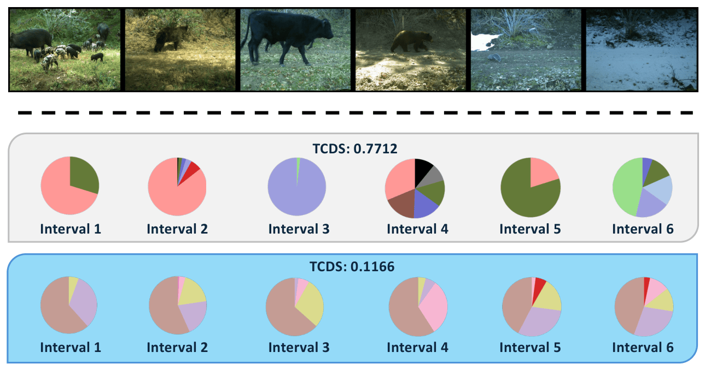
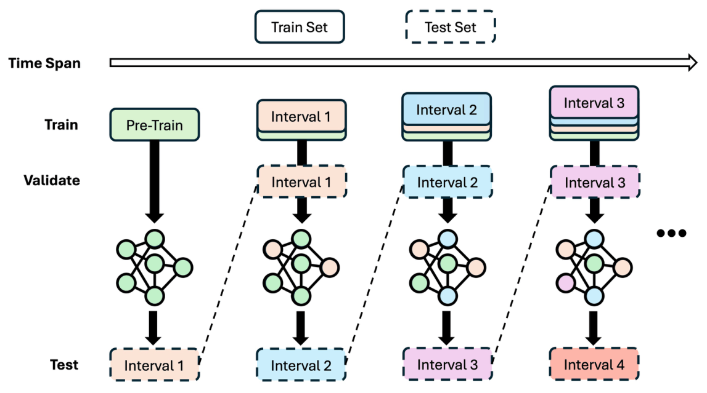
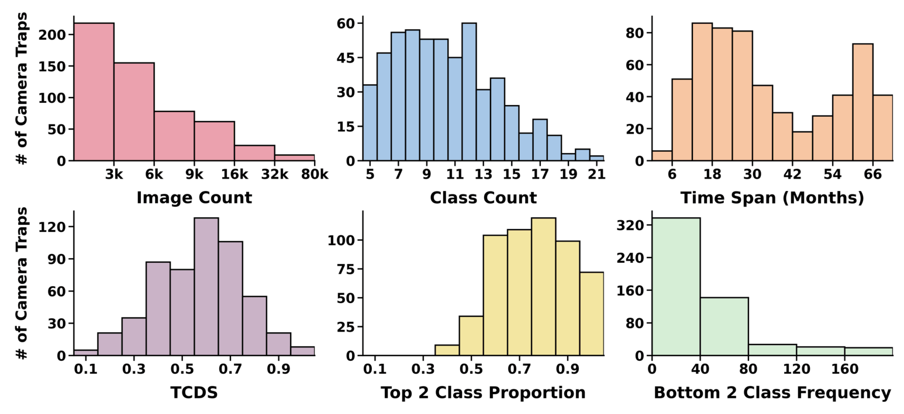
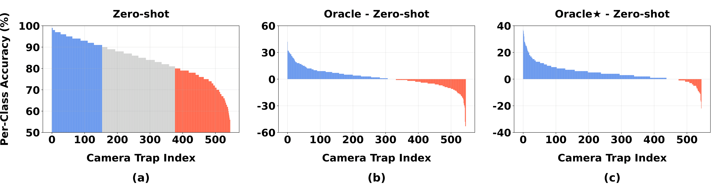

Camera traps are crucial for large-scale biodiversity monitoring, yet accurate automated analysis remains challenging due to diverse deployment environments. While the computer vision community has predominantly framed this challenge as cross-domain (e.g., cross-site) generalization, this perspective overlooks a primary challenge faced by ecological practitioners: maintaining reliable recognition at a fixed site over time, where the dynamic nature of ecosystems introduces profound temporal shifts in both background and animal distributions.
To bridge this gap, we present the first unified study of camera-trap species recognition over time. We introduce a realistic, large-scale benchmark, StreamTrap, comprising 546 camera traps with a streaming protocol that evaluates models over chronologically ordered intervals. Our end-user-centric study yields four key findings: (1) biological foundation models underperform at numerous sites even in initial intervals; (2) naive adaptation can degrade below zero-shot performance; (3) severe class imbalance and pronounced temporal shift are the two main drivers of difficulty; and (4) effective integration of model-update and post-processing techniques can largely improve accuracy, though a gap from the upper bounds remains.
Four deployment-critical insights from our end-user-centric study
BioCLIP 2's zero-shot accuracy varies widely across 546 sites — 161 exceed 90%, but 162 fall in the 50–80% range. Foundation models alone are insufficient; site-specific adaptation remains critical.
Under realistic streaming evaluation, naive supervised fine-tuning on all accumulated data consistently underperforms zero-shot baselines by a large margin — even without any storage or computation constraints.
Severe class imbalance (top-2 species average ~71% of images) and pronounced inter-interval temporal shift (TCDS) jointly create a compounding effect that makes continual adaptation exceptionally difficult.
BSM + LoRA yields substantial improvements and enables 474/546 sites to outperform zero-shot. Post-processing techniques further narrow the gap to oracle, but principled hyperparameter selection without future data remains open.
Camera traps passively wait for animals — so the training data is inherently lopsided, with a few dominant species accounting for the bulk of images. On top of that, ecosystems are non-stationary: the species that appeared frequently last season may barely show up next interval. We introduce TCDS to quantify this shift. The two rows of pie charts below illustrate it directly — a high-TCDS trap sees dramatically different species distributions across intervals, while a stable trap stays relatively consistent. A model that performed well on past data has no guarantee of performing well on the next interval.

Temporal Class Distribution Shift (TCDS)
$$\text{TCDS} \coloneqq \overbrace{\dfrac{1}{n-1}\sum_{j=1}^{n-1}}^{\substack{\small\text{Average over} \\ \small\text{all intervals}}} \quad \underbrace{\sum_c \left| p_j^c - p_{j+1}^c \right|}_{\substack{\small\text{Class distribution} \\ \small\text{shift between intervals}}}$$where $p_j^c$ is the normalized frequency of class $c$ at interval $j$. Higher TCDS means larger temporal shift.
A realistic, large-scale benchmark for camera-trap species recognition over time
Unlike conventional benchmarks where all target data is available at once, StreamTrap mirrors how camera traps operate in the field. At each interval, a model is updated on everything seen so far — then evaluated on the next unseen interval. This chronological train-then-test loop is what makes naive fine-tuning surprisingly fragile.

StreamTrap spans a wide range of conditions — from 6-month deployments to multi-year streams, from 5-class to 45-class ecosystems. The bottom row reveals the core challenge: high TCDS and extreme class imbalance are not edge cases but the norm.

BioCLIP 2 — a state-of-the-art biological vision foundation model — shows remarkable variability: 161 sites exceed 90% zero-shot accuracy, but another 162 fall below 80%. This wide spread makes it impossible to rely on zero-shot alone. Worse, naively fine-tuning on accumulated data (middle panel) degrades performance on ~40% of sites — the model over-adapts to past distributions and fails on future intervals. Our recipe (Oracle★, right panel) dramatically reduces these failure cases.

Accuracy comparison across 20 representative camera traps (averaged).
| Model | Avg. Accuracy (%) | vs. Zero-Shot | Sites > ZS (of 546) |
|---|---|---|---|
| Zero-Shot (BioCLIP 2) | 81.9 | — | — |
| Accum (naive fine-tune) | 67.9 | −14.0 | 332 |
| Accum★ (BSM + LoRA) | 84.8 | +2.9 | 474 |
| Oracle★ (upper bound) | 88.8 | +6.9 | — |
A practical, first-to-try strategy for camera-trap deployment
Balanced Softmax (BSM) addresses severe class imbalance without hyperparameter tuning. LoRA preserves pre-trained representations while enabling efficient site-specific adaptation. Combined, they yield a compounding boost that enables 474 / 546 sites to outperform zero-shot (vs. only 332 for naive fine-tuning).
Critical deployment questions largely underexplored by the vision community
Before any data collection, practitioners need to predict whether a foundation model will be accurate enough at a new site. OOD confidence signals (MSP) show positive but weak correlation (r = 0.907) with zero-shot accuracy — insufficient for reliable deployment decisions.
Model accuracy generally increases with more intervals of adaptation, but not all updates are equally valuable. Freezing a model after 75% of intervals already achieves 82.7% vs. 84.9% for full adaptation — motivating selective updating.
At every interval, practitioners face the Adapt-or-Skip decision before seeing future data. MSP-based and CLIP feature-based heuristics both perform close to random guessing (~47–48% accuracy). An oracle always selecting the correct action outperforms baselines by 11.34% — substantial room for future research.
@article{jeon2025streamtrap,
title = {Lessons and Open Questions from a Unified Study of
Camera-Trap Species Recognition Over Time},
author = {Jeon, Sooyoung and Tian, Hongjie and Wang, Lemeng and
Mai, Zheda and Bakshi, Vidhi and Hou, Jiacheng and
Zhang, Ping and Chowdhury, Arpita and Gu, Jianyang and
Chao, Wei-Lun},
journal = {arXiv preprint},
year = {2025},
note = {Equal contribution: Jeon, Tian, Wang}
}